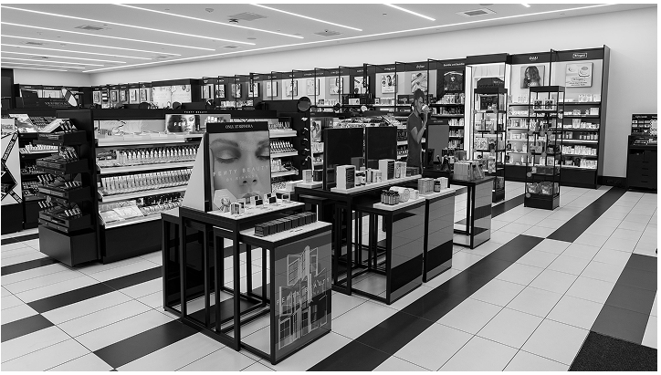

One thing I loved about the Sunnies Face Lip Glaze was how it brought life to my pale, chapped lips with the perfect wash of color, while the metal applicator smoothed everything out. But if I’m being honest, the scent? Not my favorite. It smelled too artificial and metallic. While I’m not looking for an exact dupe, I do want a new pink lip balm that checks off the things I liked from Sunnies Face.

In this blog, I will be reviewing 4 lippies. To find the perfect pink lip balm, I’ll be judging each lippie based on five key factors:
Formula & Hydration:Must be a true lip balm or serum (no oils or glosses) that keeps lips soft and moisturized.
Color Payoff:A sheer baby or strawberry pink—just enough tint without going overboard.
Texture & Comfort:Lightweight and smooth—no stickiness or heavy feel.
Packaging & Application:Easy-to-use applicator with mess-free, convenient packaging.
Value for Money: Does the price match the quality and amount of product? ($/oz)
Laneige Glaze Craze Tinted Polypeptide Lip Serum
If you’ve ever dreamed of slathering your lips on a freshly glazed donut, then this lip serum might just be your perfect match. I was so excited to try this because it’s a new release, but does it live up to the hype? Let’s break it down!
Pros:
✅ High-Shine Tint: The shine is next-level—it gave my lips that plump, glazed-donut effect we all love. Plus, the pigment was surprisingly rich, delivering a peachy-pink tint that made my lips look extra juicy. The consistency is thicker than your average gloss, so one swipe is enough, but layering more won’t make your lips feel sticky or heavy.
✅ A Deliciously Sweet Scent: The Peach Glaze scent is yummy, but not exactly peachy—it actually smells more like a freshly baked good. It’s sweet, subtle, and not overpowering or artifical, so every application feels like a mini dessert moment for your lips.
✅ Plush Donut Applicator: This lip serum comes with an adorable, plush donut-shaped applicator—something I’ve never seen in a lip product before! It felt a little odd at first, but the soft, rounded shape makes application super smooth, creating a plush, pillowy effect that makes reapplying even more satisfying. It’s like kissing a donut!
✅ Made in Korea: Since this lip serum is made in Korea, it’s packed with skincare benefits. It contains polypeptides to hydrate and nourish your lips, so while it gives instant shine, it’s also working behind the scenes to keep your lips soft and healthy.
Cons:
❌ Limited Shade Range: As gorgeous as Peach Glaze is, the shade range is very limited. I was hoping for a baby pink or cool-toned option, but most of the shades are darker and more pigmented. Since it’s a new release, I’m hoping they expand the shade selection soon!
❌ Not For Chapped Lips: I tested this lip serum in snowy weather, and unfortunately, it didn’t cling well to my dry lips. If you have super chapped lips, the formula settles into fine lines and fades pretty quickly. It’s definitely better as a glossy finish than a true lip balm replacement.
At $22 for 12g, that comes out to $1.83 per gram, making it pricier than the average lip product. However, if you love a juicy, high-shine gloss with K-beauty lip care benefits, it’s a fun, indulgent buy! Bottom line? It’s a stunning gloss, but don’t expect it to replace your go-to lip balm.
OleHenriksen Pout Preserve Hydrating Peptide Lip Treatment
This lip treatment was recommended to me by a friend, and let’s be honest—TikTok dermatologists have been raving about it too! With all the hype, I just had to try it out for myself. So, is the OleHenriksen Pout Preserve Hydrating Peptide Lip Treatment worth the splurge? Let’s break it down!
Pros:
✅ Strawberry Scent & Mauve Pink: The scent is easily one of my favorites—it smells like sweet, juicy strawberries without being too artificial or overwhelming. And the mauve-pink tint? Absolutely perfect! It’s that just-right pink—not too light, not too dark, and universally flattering on all skin tones.
✅ Fuller, Softer, Bouncier Lips: This doesn’t sting or feel like a plumping gloss, yet somehow, it makes my lips look fuller and healthier. The hydration is next level, giving my lips a smoother, more pillowy look. It’s basically your lips, but with a juicy boost!
✅ Long-Lasting & Super Hydrating: One thing I really loved was how long-lasting this is. It didn’t just sit on top of my lips—it actually helped reduce dryness and flakiness. If you struggle with fine lines or chapped lips, this blurs them out, leaving your lips looking soft and nourished all day.
Cons:
❌ Thick & Sticky Consistency: While it’s super hydrating, the formula is thicker than expected—almost like a lip gloss. It’s not unbearably sticky, but if you don’t like thicker lip products, this might not be for you.
❌ Tough Applicator: I actually love an angled applicator, but this one felt a little too stiff. I had to apply a bit more pressure than I’d like, which made the application feel less smooth.
❌ Not Much Product for the Price: At $22 for 11.5g, this comes out to $1.91 per gram, making it the smallest amount of product on my list. While it’s high quality, I do wish there was more product for the price.
Honestly, I really like this one. Despite the thicker formula and tough applicator, the scent, hydration, and lip-plumping effect won me over. Would I buy it again? Probably! It’s definitely one of those products I want to keep in my collection.
Summer Fridays Lip Butter Balm
I had this lip balm for the longest time until I tragically lost it (RIP 🪦). But since we spent so much time together, I have plenty to say about this product. So, was it true love or just a fleeting romance? Let’s break it down!
Pros:
✅ Buttery Smooth & Glossy Finish: The texture is heavenly—it’s made with shea butter and plant-based waxes, so it melts onto your lips like butter while still giving a glossy shine. It feels so lightweight that you can reapply as much as you want without it ever feeling sticky or oily.
✅ Plush, Angled Applicator: The soft, angled applicator feels like a kiss on the lips—seriously! It makes applying the balm effortless and luxurious, hugging the natural curves of your lips for a perfectly even layer every time.
✅ Best Smelling Scent: This smells like a freshly baked sugar cookie, and I am obsessed. The scent is warm, sweet, and comforting without being overly artificial or overpowering. Every time I applied it, I felt like I was treating myself to a sweet cookie.
Cons:
❌ Pink Shade is Too Sheer: While I love the formula, the pink shade barely shows up. If you're looking for a tinted lip balm with noticeable color, this might not be the one—at least in Pink Sugar or Birthday Cake. Other shades are more pigmented, but if you want baby pink lips, you may be disappointed.
❌ Hard to Get Product Out: One of the most annoying things about this balm is that it can be difficult to squeeze out, especially when the tube is laid on its side. Sometimes, I’d be squeezing like crazy, only to feel like I was pushing out air instead of product.
❌ Pricey for a Lip Balm: At $24 for 14g, or $1.71 per gram, it’s the most expensive lip balm on this list—but you do get more product than most balms. Is it worth it? If you love the formula, scent, and luxurious feel—then yes. But if you're just looking for a basic lip balm, you can find cheaper options that still do the job.
If you want a lip balm that feels like a cloud, smells like sugar cookies, and leaves your lips glossy and hydrated, this is a winner. However, if you’re after visible color payoff or a super affordable option, this might not be the best choice. Would I repurchase? If I ever recover from losing my first one (I’m still grieving 😭), I’d totally get another one!
Tower 28 is one of my favorite makeup brands, and honestly, I think it’s so underrated. More people should be talking about them! But when it comes to their lip treatments, do I love them as much as the rest of their products? Let’s get into it!
Pros:
✅ A Shade for Everyone: One thing I have to give Tower 28 credit for is its diverse shade range. Unlike some brands that only release two or three basic colors, they actually have shades I want in a lip product. Plus, the tones seem to be universally flattering, so they look great on all lips.
✅ Affordable Lip Balm: At $16 for 10.77g, or $1.48 per gram, it’s the cheapest option among higher-end lip balms. If you want something budget-friendly but still feels luxe, this one’s got you covered. Most Sephora lip balms cost over $20, this is one of the affordable alternatives.
✅ Fruity Scent: The scent is fruity and fresh, which I enjoyed! It’s not too strong, though I do prefer other scents over fruity ones. If you’re someone who loves tropical, juicy-smelling lip products, this might be right up your alley.
Cons:
❌ Hard, Round Applicator: The applicator is round and a little too firm, making it harder to spread the product evenly on my lips. I prefer plushier, angled applicators, so this one didn’t give me the smoothest application experience.
❌ Doesn’t Last Long: I found myself reapplying constantly because it fades quickly. I also noticed that when I tried layering it over my lip liner or other lip products, it rubbed them off instead of blending smoothly. So, I’d recommend wearing this balm on its own rather than trying to mix it with other products.
❌ Drying & Grainy: I was expecting more hydration, but instead, the formula felt a bit drying—especially in cold weather. It also left some residue on the sides of my mouth, which wasn’t the cutest look. To be fair, I tested it during snowy weather, so maybe the winter chill played a role. But either way, I wish it were a bit more nourishing.
It’s not a bad product, but it’s not amazing either. For $16, it’s a decent, budget-friendly lip balm if you’re looking for a sheer, tinted option with a fruity scent. However, there are several cons more than the others and you might want to save your money and splurge on something else. Would I repurchase? Probably not. But it’s still a great lippie!